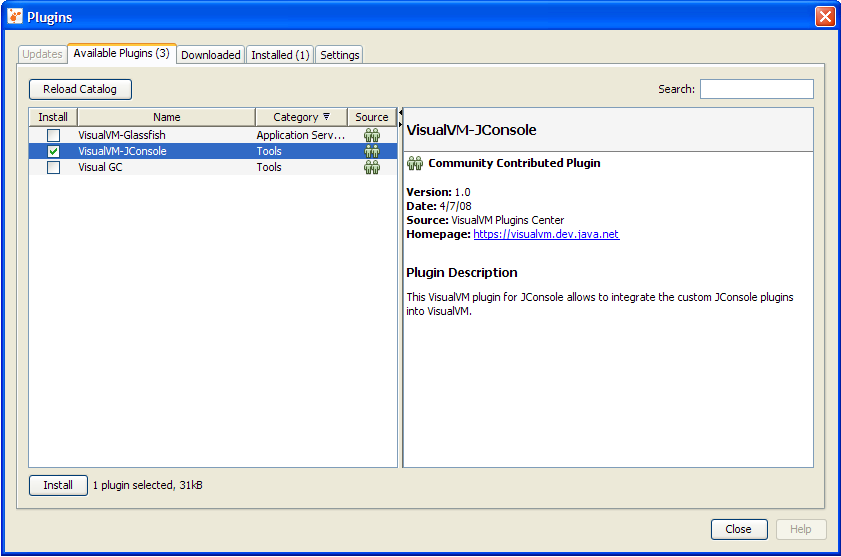
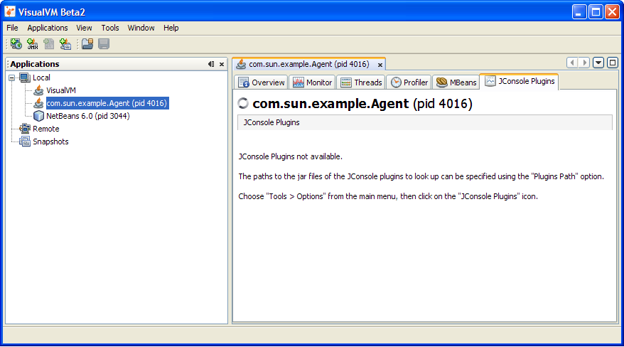
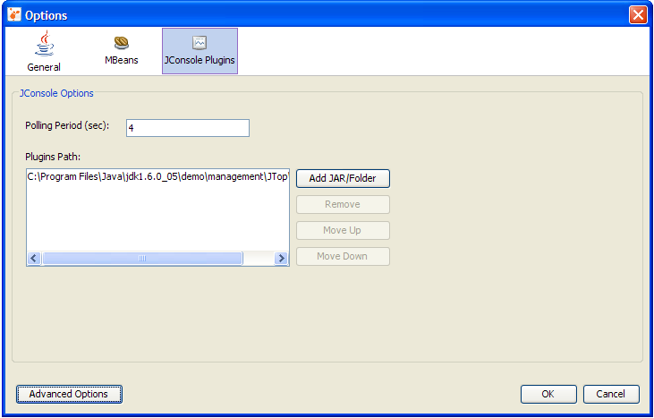
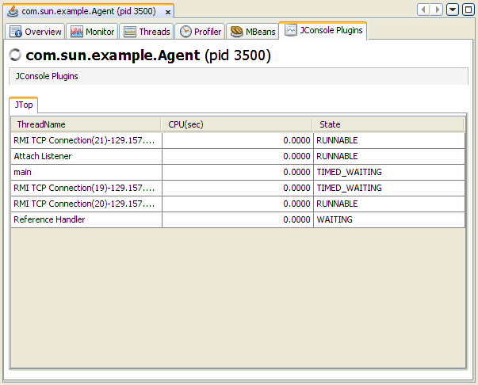

JConsole 플러그인 래퍼(Wrapper)탭
VisualVM에는 선택가능한 플러그인이 존재한다. 이중에 자바SE의 모니터링및 관리 콘솔인 JConsole은 자체탭을 제공한다. JConsole플러그인은 JConsole플러그인 래퍼탭을 사용해서 VisualVM에 쉽게 추가가 가능하다.
알림: JConsole을 위한 탭을 생성하는 방법의 세부적인 정보는 자바SE의 모니터링및 관리 가이드 문서에 있는 커스텀탭 생성을 보라. . 어쨌든, JConsole을 위한 커스텀탭을 생성한 적이 없이 VisualVM을 사용하고 있다면, VisualVM에 직접 커스텀 플러그인을 생성해야만 한다. VisualVM플러그인을 생성하는 세부적인 정보를 보기 위해서는 VisualVM 확장하기 와 VisualVM API에 대한 흔한질문들을 보라.
JConsole 플러그인 래퍼 탭 추가
VisualVM에 JConsole플러그인 래퍼탭을 추가하기 위해, 다음의 과정을 거치자.
- VisualVM 드랍다운 메뉴에서 'Tools' 아래 'Plugins' 를 선택하자. 그러면 다음의 창이 보일것이다.

- 'VisualVM-JConsole'에 체크하고 'Install'을 클릭한다.
- 화면에 나오는데로 그대로 따라간다.
- 실행중인 자바 애플리케이션에 하이라이트가 표시되면, 해당 애플리케이션을 선택하고 마우스 우측 버튼을 클릭 후 'Open'을 선택한다.
그러면 우측화면에 VisualVM의 JConsole플러그인 탭이 보일것이다.
혹시 JConsole플러그인이 탭에 보이지 않는다면, 다음의 과정을 좀더 보자.

- Tools | Options 메뉴를 사용해서 커스텀 JConsole플러그인을 가져올수도 있다.
- 'JConsole Plugins'을 클릭한다.
- 'Add JAR/Folder'를 클릭하고 JConsole 플러그인 자바아카이브(JAR) 파일을 찾자.
JTop이라 불리는 JConsole 예제 플러그인은 자바SE 6에 제공된다.
JTop애플리케이션은 애플리케이션에서 실행중인 모든 쓰레드의 CPU사용율을 보여주는 JDK기능이다.
이 기능은 CPU를 많이 사용하는 쓰레드를 찾는데 도움이 된다. 독자적인 GUI와 마찬가지로 JConsole플러그인을 사용할 수 있다.
JTop플러그인을 위한 JAR파일은 JDK_HOME/demo/management/JTop/JTop.jar에서 찾을수 있다.
여기서 JDK_HOME은 JDK를 설치한 위치다.

- JConsole Plugins 의 선택가능한 패널에서, 폴링주기를 셋팅할 수 있다. 폴링주기 옵션은 JConsole Plugins탭이 정보를 업데이트하는 주기를 정의한다.
- OK를 클릭해서 패널을 닫자.
- VisualVM의 오른쪽 패널에서, 모니터링된 프로세스의 탭을 닫자.
- 왼쪽패널에서 프로세스를 선택 후 마우스 우측 버튼을 클릭하고 Open을 선택해서 프로세스의 모니터링을 재시작하자.
JTop탭은 JConsole Plugins탭에서 보일것이다.

JTop탭이 추가되고, 실행중인 여러개의 쓰레드의 CPU사용율을 보여준다.